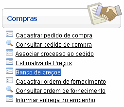
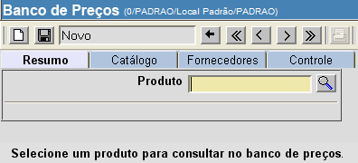
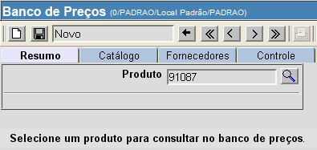
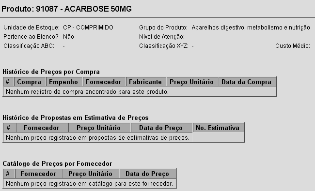
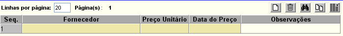
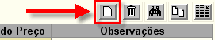
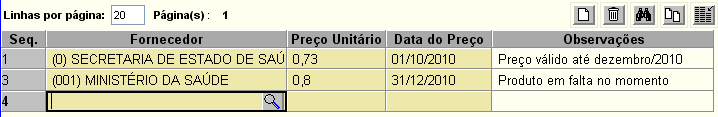
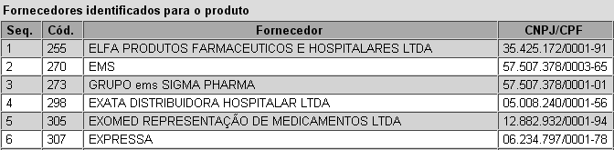
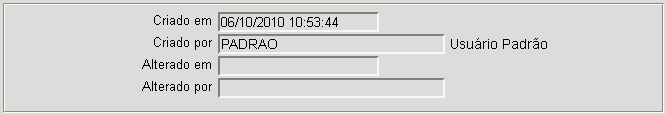

Banco de Preços [ Voltar ]Utilize esta tela para consultar preços e fornecedores de um determinado produto. É possível conferir aqui preços catalogados e preços praticados em certames anteriores, além dos fornecedores associados ao produto. O formulário "Banco de Preços" encontra-se dentro do menu "Compras". 
Ao clicar no formulário, o sistema exibirá a seguinte tela: 
1º
Passo: informe
o código do produto desejado no campo "Produto" e pressione a
tecla "Enter". Se desejar, clique no botão
2° Passo: clique no
botão 
Aba "Resumo" [ Voltar ]
O resumo do banco de preços exibe os dados principais do produto, como a sua unidade, grupo, classificação, custo médio, entre outros. Na tabela "Histórico de Preços por Compra", são exibidos os detalhes das últimas compras praticadas. A tabela "Catálogo de Preços por Fornecedor" lista os fornecedores e preços catalogados para o produto selecionado. Aba "Catálogo" [ Voltar ]
Na aba catálogo, é possível registrar preços, condições ou observações do produto junto a outros fornecedores. Para catalogar um fornecedor, siga os passos abaixo. 1° Passo: clique no botão  da
grade. Uma nova linha será criada para a inclusão da nova
cotação. da
grade. Uma nova linha será criada para a inclusão da nova
cotação. 
Observação: para excluir uma cotação, clique em qualquer campo da linha da cotação que desejar excluir. Após selecionar a linha, clique no botão  [Excluir] da grade (ver
imagem acima). [Excluir] da grade (ver
imagem acima).2° Passo: informe os dados do fornecedor, preço e data desta cotação. Se desejar, deposite no campo "Observações" informações adicionais sobre a cotação. 
Se necessário, clique
no botão
 [Procurar]
para selecionar o fonecedor a partir de uma lista contendo todos os
fornecedores cadastrados. [Procurar]
para selecionar o fonecedor a partir de uma lista contendo todos os
fornecedores cadastrados.2° Passo: clique no botão  para salvar a cotação.
Para adicionar outras cotações, siga novamente os passos 1 e 2. para salvar a cotação.
Para adicionar outras cotações, siga novamente os passos 1 e 2.Aba "Fornecedores" [ Voltar ]
São exibidos nesta aba todos os fornecedores que possuem associação com o produto selecionado. A associação pode se dar por meio de registro no catálogo do banco de preços ou diretamente no cadastro de produtos. Aba "Controle" [ Voltar ]
Para finalizar, se for necessário, clique no botão
|
 para
visualizar e imprimir o relatório do histórico de preços.
para
visualizar e imprimir o relatório do histórico de preços.